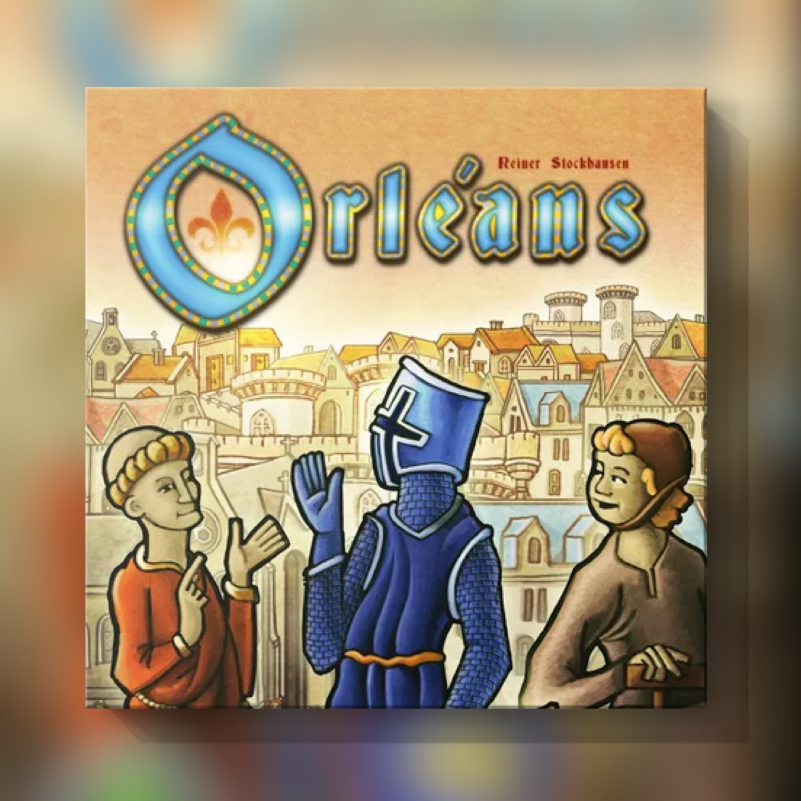

Orléans (2014)
Si no sale el barquero, mira quién llenó la bolsa

Tienes una bolsa de tela llena de fichas de personas: agricultores, barqueros, caballeros, algún monje. Cada ronda metes la mano, sacas unas cuantas sin mirar y trabajas con lo que te ha tocado. Llega el turno importante, necesitas un barquero y no sale. ¿De quién es la culpa? Lo cómodo es echársela a la bolsa. El juego te dice otra cosa.
Lo diseñó Reiner Stockhausen y lo publicó en 2014 con dlp games, su propia editorial. Eres un comerciante en la Francia medieval, en Orléans y la zona del Loira. Reclutas gente, la metes en la bolsa y cada ronda sacas unos cuantos para ponerlos a trabajar en tus edificios. Con eso viajas por el mapa recogiendo mercancías, montas puestos comerciales en otras ciudades y mandas a la gente que te sobra a las obras de la ciudad. Hay dieciocho rondas para hacerlo todo.
Junta la colocación de trabajadores con una idea de los juegos de construcción de mazos. No eliges con quién trabajas cada ronda, eso lo decide la bolsa. Lo que sí eliges es a quién metes en ella. Cada vez que reclutas cobras algo en el momento: los barqueros te dan dinero, los caballeros te dejan sacar más fichas y los eruditos te suben el desarrollo. Y a la vez cambias lo que va a salir de la bolsa a partir de entonces. Con quince agricultores y un barquero, sacando cuatro fichas por ronda, ese barquero te sale más o menos una ronda de cada cuatro.
A mí ese azar me gusta. Me parece lo más interesante del juego, porque buena parte lo has construido tú. Lo que sale depende de a quién reclutaste, a quién mandaste a las obras, a quién dejaste esperando y de cuántos caballeros tienes. Cuando el barquero no aparece, muchas veces la explicación está unas rondas atrás. Hay cosas que no controlas, como el orden de los eventos o la plaga, que te quita una ficha al azar. Para eso tienes el monje, que vale por cualquier oficio, y las ruedas dentadas, que hacen que un edificio necesite menos gente. Y una mala mano tampoco te hace perder la ronda: lo que no colocas se queda en el mercado de tu tablero para la siguiente.
También importa cuándo reclutas. Un caballero que metes en la ronda tres te da una ficha más durante quince rondas. El mismo caballero en la dieciséis te la da dos veces. En las últimas rondas reclutas por lo que cobras al meter la ficha, porque casi no va a llegar a salir de la bolsa.
La puntuación lo ata todo al desarrollo. Tus puestos comerciales y tus ciudadanos valen tanto como tu nivel de desarrollo: siete fichas con desarrollo cuatro son veintiocho puntos, y con desarrollo dos, catorce. Extenderte por el mapa sin eruditos en la bolsa te sale caro.
Puede parecer que cada uno juega en su tablero, pero no es así. En las obras de la ciudad mandas gente a proyectos comunes, cobras unas monedas por cada persona y quien completa la obra se lleva un ciudadano. Esa gente ya no vuelve, así que de paso limpias la bolsa: si te sobran agricultores y hay una obra que los pide, lo que queda dentro sale más. Las fichas de cada oficio tampoco son infinitas. Si se acaban los caballeros, nadie puede reclutar otro hasta que alguno vuelva a la reserva. En el juego base no hay forma de atacar a nadie. Todo pasa por llegar antes que el otro.
Algo de culpa tiene la bolsa, pero casi siempre tiene más quien la llenó.
De Orléans hablamos en el episodio 4x01 de La Contralúdica: https://www.ivoox.com/contraludica-4x01-orleans-audios-mp3_rf_182388172_1.html
Ficha técnica
- Título original: Orléans
- Diseño: Reiner Stockhausen
- Editorial: dlp games (2014)
- Jugadores: 2 a 4 (hasta 5 desde la octava edición, de 2023)
- Duración: unos 90 minutos